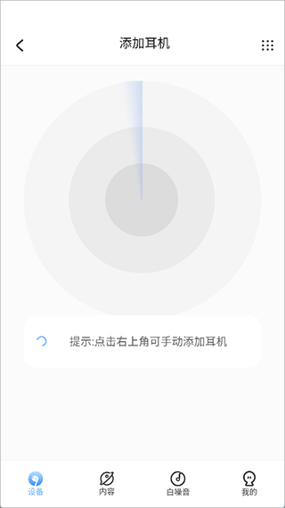

iKF App 深度盘点：一款耳机管理应用能把事情做细到什么程度
从配对连接、音效调音、煲机计划到固件升级，iKF App 的能力面完整铺开——看看这款伴随 iKF 耳机产品线一路走来的配套应用，到底解决了哪些真问题，又在哪些地方还留着短板。
写在前面：为什么值得盘点一款耳机配套 App
买 iKF 耳机时，包装盒上会印一个二维码，扫出来就是 iKF App 的下载入口。很多人扫完装完就放那儿了——耳机能连上、能听歌，App 似乎可有可无。但如果你长时间用着一副 iKF 耳机，迟早会碰到一些问题：新固件刷不刷、EQ 怎么调、搜不到耳机怎么办、煲机有没有必要、恢复出厂的正确姿势是什么……这些问题的答案，全在这个不起眼的配套应用里。
我用了快一年 iKF 的真无线和头戴两条产品线，App 从早期版本一路更到现在的 2.0.x 系列，也留意到它的官网上列出了当前支持的所有耳机型号。踩过不少坑，也积累了一些经验。这篇盘点就是把这款应用的能力面完整摊开——它到底提供了什么、哪些地方做得扎实、哪些地方还留着明显短板，以及什么样的人值得认真用起来。
配对与连接：不是只有「自动发现」一条路
配对是所有蓝牙配件的起点，也是最容易出问题的环节。iKF App 在这块做得比想象中细致。
常规路径是打开 App、点「开始添加耳机配对」、等搜索动画转完、列表里选中自己的耳机型号。大部分场景下这条链路走得通，但我在地铁里、在办公室蓝牙设备密集的环境下遇到过自动列表又长又乱、目标耳机被淹没的情况。这时 App 界面藏着一个容易被忽略的入口——搜索页面的右上角图标，点进去可以直接从型号列表手动添加。
这个手动添加的设计看似不起眼，实际上解决了好几种真实痛点。比如耳机型号太新，当前 App 版本的支持列表还没覆盖到，自动发现形同虚设；又或者耳机错过了开机一分钟的广播窗口期，广播已经停了，自动搜索永远等不到结果；还有一种情况是耳机本身是旧款，新手机的蓝牙协议兼容性没跟上，手动选型号反而能绕过自动发现机制直接建立连接。

手动添加成功后，设备板块出现的控制面板和自动配对没有任何区别，固件升级、EQ 调音这些高级功能都能正常用。唯一需要注意的是，如果型号列表里找不到自己的耳机，先别慌——先确认耳机是否属于支持型号，再检查 App 是不是最新版。iKF App 的每个版本更新说明里几乎都有「增加机型」这一项，旧版 App 不认识新款耳机是高频现象。
音效与 EQ 调音：给想折腾的人留足空间
配对成功只是开始，真正体现 App 价值的是音效调音这块。iKF App 内置了多组预设 EQ——流行、摇滚、古典、人声……这些预设覆盖了大部分用户的听音偏好，直接点选就能生效。但如果你对声音有更具体的要求，自定义 EQ 才是重头戏。
我自己是用自定义 EQ 把一款入门级真无线的低频收了收、高频提了一点点，听感比默认状态干净不少。自定义界面的操作逻辑很直观：十个频段的增益推子，实时预览，调完保存一个命名好的方案，下次换回来直接切换。对于喜欢折腾声音的人来说，这比播放器里调 EQ 更精准——毕竟 App 直接对接耳机的 DSP，不是在手机端做二次处理。
除了 EQ，App 还提供了一些音效增强选项，比如空间音频、低音强化、人声增强这些开关。不同耳机型号支持的选项略有差异，以设备面板实际显示为准。
煲机功能：把「玄学」变成有分寸的流程
煲机这件事在耳机圈一直存在争议——有人说必须煲满多少小时才能听，有人说正常用就是最好的煲机。iKF App 给出了一个相当克制的方案：内置煲机计划，分 4 到 6 个阶段逐步推进，每个阶段有对应的音量建议和时长要求。
我按 App 的煲机计划跑过一轮，印象最深的是它明确标出的音量红线：30%。App 给出的建议音量就是 30%，这不是随便写的数字——小音量让振膜在小行程内渐进活动，既安全又能积累时长。很多人自己手动煲机时容易犯的错就是开着大音量轰，大行程反复冲程对悬边反而是疲劳损伤，跟「激活单元」的初衷完全相反。
在时长节奏上，App 的计划本身就是「分段」思路——每个阶段几小时到十几小时，阶段之间有间隔。连续几十小时不间断的做法，App 的计划里根本不会出现。我见过有人说「睡前把耳机放着跑」，App 确实有定时关机功能可以配合，但耳机应该放在桌面上而不是戴着，而且煲机收益主要集中在最初的几十小时，后面边际效益递减很快，熬夜连煲纯属心理安慰。
煲机不是万能前置——如果煲机前后听感没有改善，那大概率不是单元状态问题，是调音口味不对，这时候应该回到自定义 EQ 去解决。
固件升级与日常维护：App 是唯一正确的渠道
iKF 耳机的固件升级只能通过 App 完成，没有 PC 工具或网页端入口。这意味着 App 不仅是连接工具，还是固件分发的唯一渠道，固件更新日志和详细操作步骤在文档上都有记录。固件更新通常伴随着 bug 修复和兼容性增强，比如某个版本修复了「后台存活差」导致连接不稳定的问题，另一个版本增加了新机型的支持。升级流程很简单：设备面板里点固件版本号，检测到新版本后按提示操作，整个过程大约三五分钟，注意不要中途断电或断开连接。
日常维护方面，App 还提供了恢复出厂设置的引导。这是排查链里偏后段的重手——它清掉耳机内部所有连接记录和配置状态，包括你调好的配对记录和部分设置。我遇到过一副耳机反复搜不到、常规手段都无效的情况，最后就是「复位 + 删旧蓝牙记录 + 重配对」三连解决的。不同型号的复位方法不一样，有的是仓盖开启时长按功能键，有的是关机时长按电源键，具体以 App 内置的说明书为准——「我的」板块里就有电子版，不用翻纸质说明书。
短板也要说：几个明显的不足
盘点不能只说好的。iKF App 目前也有几个让我不太满意的地方。
首先是安装包体积偏大——安卓端约 155MB、iOS 端超过 250MB，在一款耳机管理应用里算不上轻量。合理的解释是应用内置了白噪音音频库、视频教程专区、各产品线的说明书和常见问题内容，这些素材都打包在应用内或首次启动后拉取。手机存储紧张的人装之前得先看看剩余空间。
其次是后台存活问题。安卓端的连接稳定性受系统省电策略影响比较大，App 被系统杀掉后台后，耳机的触控操作响应会变慢。开启自启动、锁定后台、关闭省电限制可以缓解，但不是所有人都愿意折腾这些设置。iOS 端因为系统管控更严格，反而没这个问题，但代价是功能更新节奏比安卓端慢半拍。
最后是说明书和帮助内容的组织。App 内置了完整的说明书和常见问题库，但入口藏得比较深，新用户很难第一眼找到。如果能在设备面板或首页更显眼的位置放一个帮助快捷入口，体验会好很多。
什么样的人该认真用它
说了这么多，iKF App 值得认真使用的人群其实很明确。
如果你是对声音有追求的耳机玩家，自定义 EQ 和音效增强是硬性理由。播放器里调 EQ 是事后补救，App 直接对接 DSP 是从源头调音，效果差异立竿见影。而且 App 的预设 EQ 也比大部分播放器的内置预设更贴合 iKF 耳机的调音取向。
如果你是遇到了连接或固件问题的普通用户，App 是排查和解决问题的唯一正确渠道。手动配对固件没别的办法，恢复出厂的具体步骤也只能从 App 内置说明书里查。遇到问题先开 App 看一眼，比上网搜一堆来路不明的教程靠谱得多。
如果你是新买了 iKF 耳机的小白用户，App 能帮你把基础设置一次性做完。配对引导、固件升级、预设 EQ 切换、煲机计划启动——这些操作跟着 App 的引导一步步走就行，不用自己琢磨。
这款耳机管理应用的完整资料我同步维护在三个仓库里，方便不同地区的朋友就近访问：GitHub 上有完整的文档目录和版本记录，Gitee 和 GitCode 提供了国内的备份镜像，内容保持同步更新。